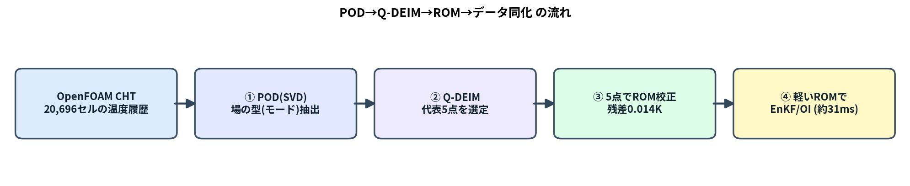

前回までの OI（blog_002）と EnKF（blog_003）は、予報モデルを毎サイクル回すのが前提でした。 ところが本物の予報モデルは OpenFOAM CHT ＋ FrontISTR の連成解析。1サイクル回すだけで分オーダーかかり、 EnKF のように 何十もの分身 × 何サイクル も回すと、現実的な時間で終わりません。
そこでこの回は、予報モデルだけを軽い ROM（縮約モデル）に置き換える話です。ポイントは1つ:
ROM のノード（代表点）を「勘」で置かず、POD でデータから系統的に選ぶ。
「PODでモードを出す → Q-DEIMで代表点を選ぶ → その点でROMを組んで校正 → EnKF/OIの予報を高速化」 という流れを、数式 → 小さな行列の手計算 → 実データの図の順で追います。

EnKF（blog_003）は、分身（アンサンブル）1つ1つについて予報モデルを前進させます。ざっくり 計算量 ≒（分身の数）×（サイクル数）×（予報モデル1回のコスト） です。
一方、この記事で作る POD選定5点ROM は、0→600秒の前進積分が約31ミリ秒（実測）。 分身200個 × 10サイクルでも数十秒で終わります。予報モデルをROMに差し替えるだけで、 同じ EnKF/OI が桁違いに軽くなる、というのが狙いです。
各時刻の全セル温度を縦ベクトルにして横に並べます（ $N$ =セル数, $m$ =時刻数）:
$$X=^{Nm}, u=1m_{k=1}^m u(t_k).$$
場を1つの単位ベクトル $$ （ $$ ）で最もよく表す、とは 各スナップショットの $$ 方向成分の二乗和を最大化すること:
$${} {k=1}{m}|{T}(u(t_k)-u)|^2 =_{} {T}(XX{T}).$$
ラグランジュ乗数 $$ で微分してゼロと置くと、固有値問題になります:
$$$$
$X$ を特異値分解 $X=UV^{T}$ すると
$$XX{T}=UV{T}VU{T}=U,2,U^{T}.$$
つまり $U$ の各列がそのまま $XX^{T}$ の固有ベクトル＝PODモード、 $_k^2$ が固有値。 巨大な $XX^{T}$ （ $NN$ ）を作らず、SVD一発でPODが得られます。 しかも上位 $r$ モードで打ち切った近似は、ランク $r$ の全行列の中でフロベニウス誤差を最小にする （Eckart–Young の定理）＝「PODは最もエネルギー効率のよいモード分解」です。
言葉だけでは腑に落ちないので、3セル(A,B,C) × 4時刻の最小例で最後まで計算します。
生の温度（行＝場所、列＝時刻。右端が各行の時間平均 $u_i$ ）:
| セル | $t_1$ | $t_2$ | $t_3$ | $t_4$ | 時間平均 $u_i$ |
|---|---|---|---|---|---|
| A（ヒータ側） | 20 | 22 | 24 | 26 | 23 |
| B（中間） | 20 | 21 | 22 | 23 | 21.5 |
| C（反対側） | 20 | 20.5 | 21 | 21.5 | 20.75 |
各セルから自分の平均を引くと、PODに渡す変動行列 $X$ は
$$X=.$$
$XX^{T}$ は「行（場所）どうしの内積」です。1行目どうし $=(-3)2+(-1)2+12+32=20$ 、 2行目は1行目のちょうど半分、3行目は1/4なので、
$$XX^{T}= =20.$$
右辺が 1つの縦ベクトルの外積になっている＝この行列は ランク1。 つまり「場の変動は、たった1つの型で完全に説明できる」ことが、もう見えています。
ランク1行列 $XX^{T}=_1,_1_1^{T}$ の非ゼロ固有値と固有ベクトルは、 外積の中のベクトル $a=(1, 0.5, 0.25)^{T}$ を正規化して得られます:
$$_1=, a===1.1456,$$
$$_1=, _1=_12=20a2=20=26.25.$$
エネルギー比は $_1 / (XX^{T})=26.25/(20+5+1.25)=26.25/26.25=1$ 、 モード1だけで100％。読み方は「A が強く・B が中・C が弱く、時間とともに一様に増える」という 1つの型。これが「平均場＝下地、モード＝そこからの変動の型」という役割分担です。
（本物の場はランク1ではありませんが、後で見るように モード1で91.8％まで説明でき、構図は同じです。）
$r$ 点 $P$ の温度だけから、PODモードで全場を復元したい:
$$u=u+U_r,a,a=(U_{r,P})^{+}(u_P-u_P).$$
ここで $U_{r,P}$ は「モード行列の、選んだ点の行だけ」を抜いた $rr$ 行列、 $u_P$ は選んだ点の測定値です。この復元が安定なのは $U_{r,P}$ が 良条件（可逆で条件数が小さい） なとき。 だから「 $U_{r,P}$ の条件数を小さくする点集合 $P$ 」を選ぶ ―― これが Q-DEIM。 アルゴリズムは「モード行列の転置に 列枢軸付きQR分解 をかけ、最初の $r$ 個の枢軸列（＝行＝点）を選ぶ」だけです。
上の3セル例（モード1本）で $r=1$ 。 $U_1=_1=(0.873, 0.436, 0.218)^{T}$ 。 枢軸QRは 絶対値が最大の成分を最初の点に選ぶので、選ばれるのは セルA（0.873が最大）。 「一番よく振れる点を測れ」という直感どおりです。
では本当に A の1点だけで場が戻るか。時刻 $t_3$ の真値 $u=(24, 22, 21)$ に対し、平均は $u=(23, 21.5, 20.75)$ 。 A だけ測ると $u_A-u_A=24-23=1$ 。係数は
$$a=(U_{1,A})^{+}(u_A-u_A)==1.145,$$
$$u=u+_1,a = + =.$$
測っていない B・C まで、真値 22・21 にピタリ。ランク1だから1点で完全復元、というのが数字で確認できました。 本物は2〜3モードなので、同じ理屈で 数点あれば場が復元できます。これが「少数の代表点でROMを組める」根拠です。
本ケース（20,696セル）に Q-DEIM をかけて選ばれた5点:
勘の流用点（すべて中央高さ）と違い、底面(P3,P4)も選んで場を広くカバーしている。 「勘」ではなく「データから系統的に」選んだ点であることがポイント。

平均場＋モード1（91.8％）＋モード2（8.1％）で場の99.9％を説明。 モード1は「全体が同じだけ昇温」する一様な型（＝支配的）、モード2が「ヒータ側↔︎反対側」の偏り。
エネルギー比（実データ）:
| モード | エネルギー比 | 累積 |
|---|---|---|
| モード1 | 91.81％ | 91.81％ |
| モード2 | 8.08％ | 99.89％ |
| モード3 | 0.11％ | 99.996％ |
2モードで99.9％ ＝ 温度場は実質2自由度。だから少数点のROMで十分表せます。

平均場のみ（誤差1.175K）→ ＋モード1（0.583K）→ ＋モード1,2（0.055K）→ ＋モード1,2,3（0.005K）。 モードを1つ足すごとに桁で誤差が縮む＝PODが効率よく場を捉えている証拠。
選んだ任意配置の $n$ 点をノードとし、全点対をコンダクタンスで結びます:
$$C_i={ji}K{ij}(T_j-T_i)+q_i(t)-h,(T_i-T_).$$
行列形にすると線形システムになり、RK4 で一括前進積分できます（これが約31msの正体）。
選んだ5点の OpenFOAM温度履歴を目標に、未知パラメータ $C[5], K[10], h$ を最小二乗で同定します:

太い半透明線＝OpenFOAM、破線＝POD選定5点ROM。ほぼ完全に重なる。
この軽い ROM の上で、OI（blog_002）と EnKF（blog_003） を回すと、温度場・発熱量 $Q$ ・放熱係数 $h$ を 少数観測から高速に推定できます。「軽い予報モデル」と「賢い観測点」の2本柱がそろいました。
01_pod_qdeim_algorithm.mdrun/select_points_qdeim.pyrun/build_calibrate_rom.py, dacore/rom_general.pyblog_002_oi_data_assimilation.md, blog_003_ensemble_kalman_filter.md